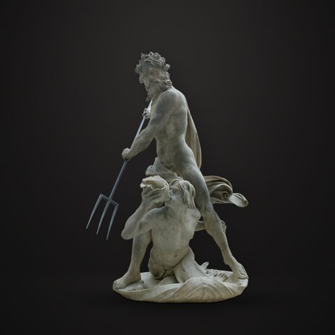
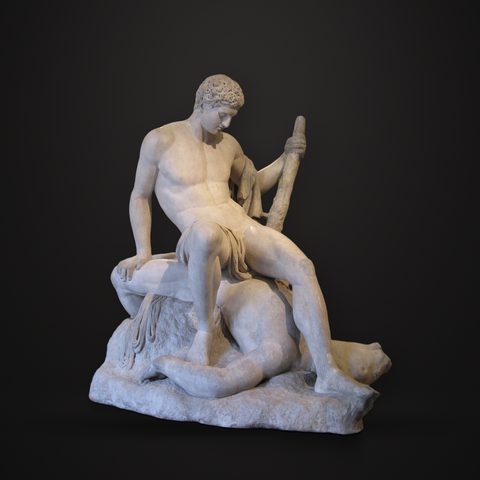
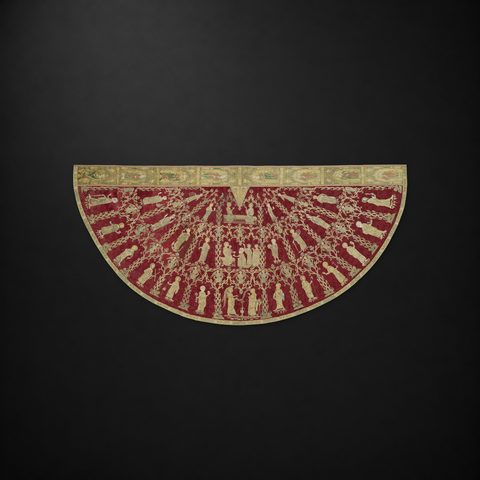
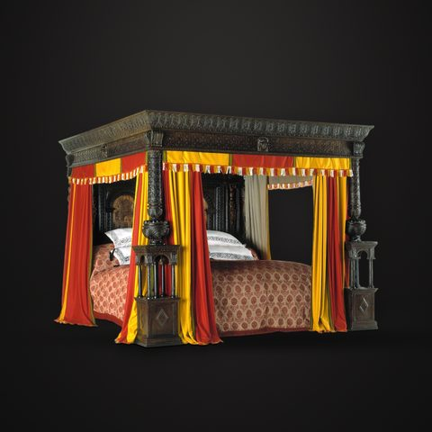
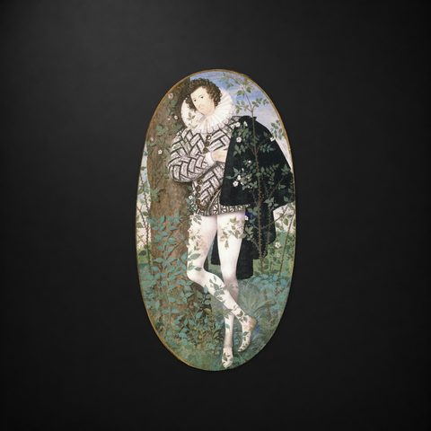
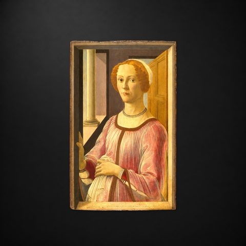

维多利亚与阿尔伯特博物馆中文语音导览
英国 · 伦敦 · Victoria and Albert Museum
472 件藏品，每件都有中文讲解
从拉斐尔的挂毯画稿、阿尔达比勒地毯、韦尔大床，到贝尔尼尼、卡诺瓦和罗丹的雕塑，伦敦 V&A 博物馆横跨欧洲与亚洲的艺术和设计藏品，每一件都有中文讲解。
- 粤语（香港）
- 国语（台湾）
- 普通话（内地）
在 App Store 下载
App 免费下载，每座博物馆单独购买，一次购买永久使用。目前在香港、澳门、台湾、新加坡、马来西亚、英国、美国、加拿大、澳大利亚、新西兰、挪威、瑞士的 App Store 提供，暂未在中国内地上架。
讲解里有这些名作
 神奇的捕鱼拉斐尔
神奇的捕鱼拉斐尔 基督嘱托彼得拉斐尔
基督嘱托彼得拉斐尔 亚拿尼亚之死拉斐尔
亚拿尼亚之死拉斐尔 大卫（石膏复制品）米开朗基罗（原作）
大卫（石膏复制品）米开朗基罗（原作） 天堂之门吉贝尔蒂（原作）
天堂之门吉贝尔蒂（原作） 参孙击杀非利士人詹博洛尼亚
参孙击杀非利士人詹博洛尼亚
海神与特里同贝尔尼尼
忒修斯与米诺陶洛斯安东尼奥·卡诺瓦 青铜时代奥古斯特·罗丹
青铜时代奥古斯特·罗丹 贝克特圣骨匣法国 · 利摩日
贝克特圣骨匣法国 · 利摩日 格洛斯特烛台英格兰
格洛斯特烛台英格兰
巴特勒—鲍登法披英国刺绣
韦尔大床英国（可能出自韦尔） 亨利七世胸像彼得罗·托里贾诺
亨利七世胸像彼得罗·托里贾诺 德雷克宝石吊坠尼古拉斯·希利亚德（女王肖像）
德雷克宝石吊坠尼古拉斯·希利亚德（女王肖像）
玫瑰丛中的青年尼古拉斯·希利亚德 阿尔达比勒地毯伊朗 · 萨法维王朝
阿尔达比勒地毯伊朗 · 萨法维王朝 兰吉特·辛格王公的黄金宝座哈菲兹·穆罕默德·穆尔塔尼
兰吉特·辛格王公的黄金宝座哈菲兹·穆罕默德·穆尔塔尼
传称斯梅拉尔达·班迪内利的女子肖像桑德罗·波提切利 蓬帕杜夫人肖像布歇
蓬帕杜夫人肖像布歇……以及更多，共 472 件。
三种中文，听你最熟悉的那一种
- 粤语（香港）地道广东话讲解，讲稿也用广东话书写，繁体中文。
- 国语（台湾）台湾口音讲解，繁体中文讲稿。
- 普通话（内地）标准普通话讲解，简体中文讲稿。
参观小贴士
- 出发前在 Wi-Fi 下把维多利亚与阿尔伯特博物馆整馆导览下载好，馆内没有信号也能用。
- 带上耳机，在展厅里不打扰别人。
- 看到感兴趣的作品，举起手机对准它就能识别；也可以在作品列表里按名称搜索。